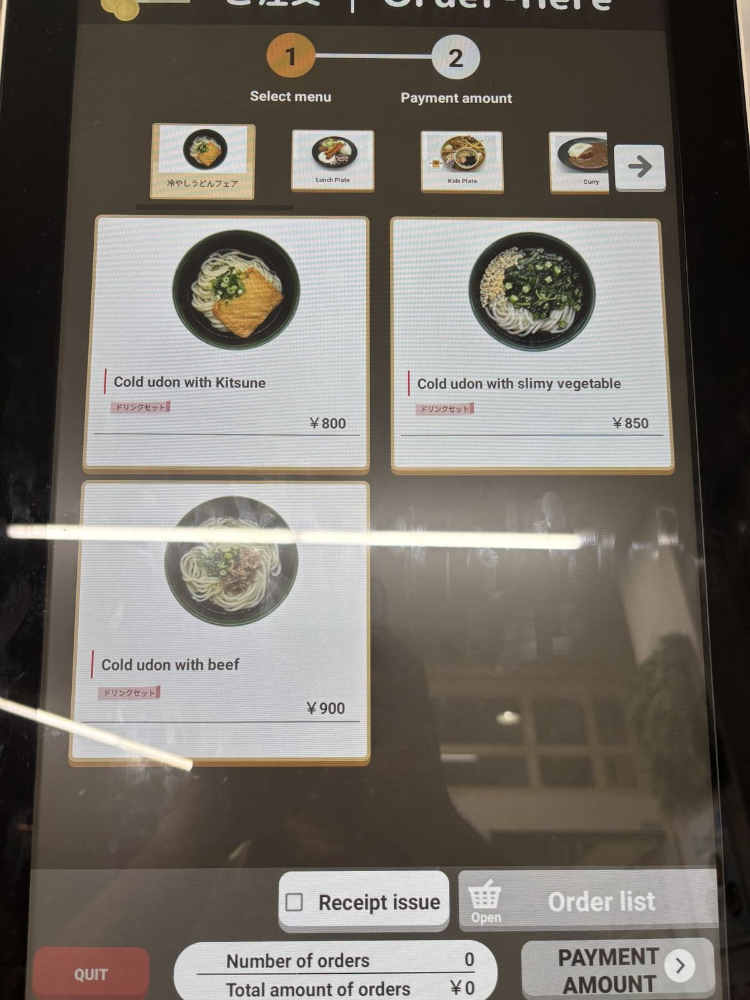
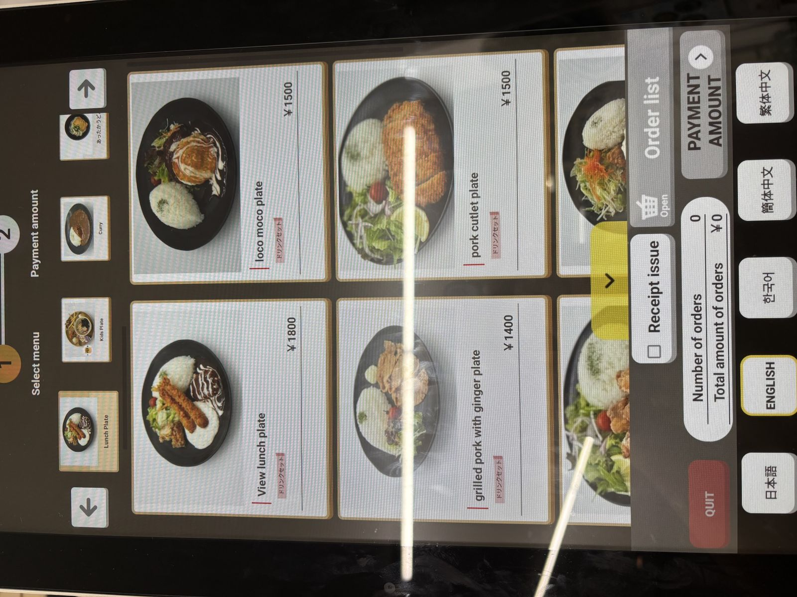
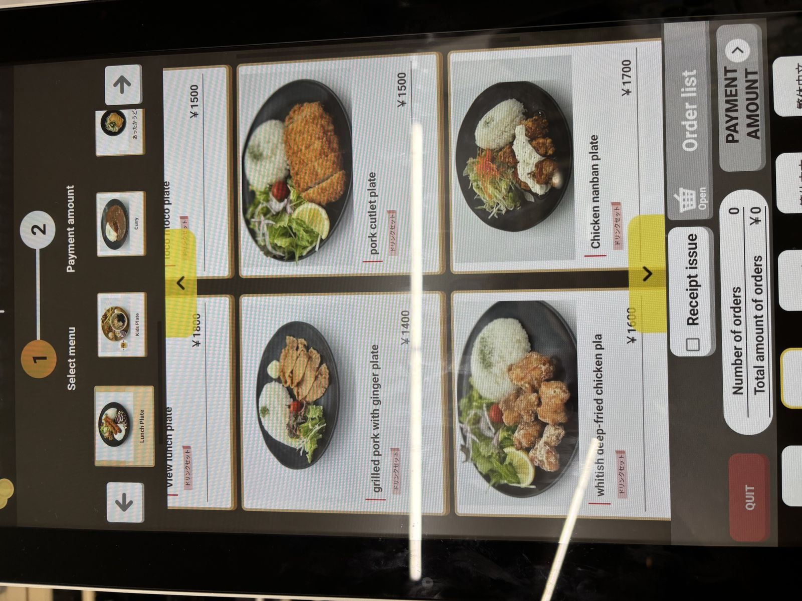
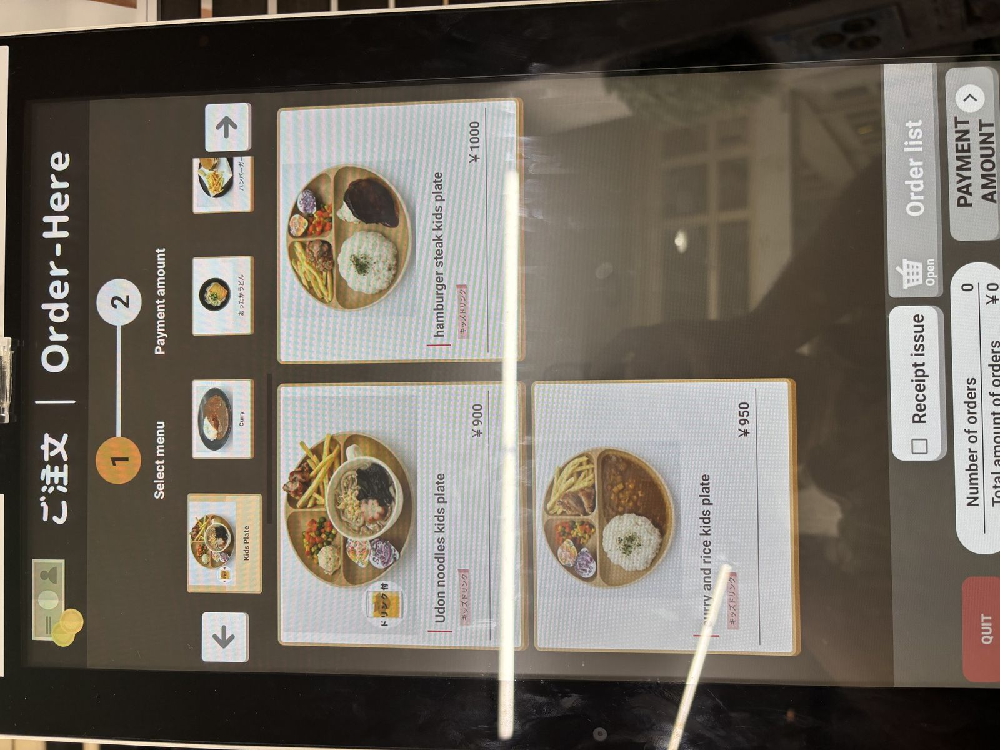

生駒駅周辺で夕食
This is honestly the best night view on the whole route — and there's a simple trick to it: order something at the Ikomasanjo restaurant, and you get to sit and eat while the entire basin glitters below you. Very few places let you pair a real meal with a view like this. If you haven't eaten yet, we'd genuinely recommend doing it here rather than saving it for later — dinner with this view is worth building your evening around. Here's the ticket-machine menu again as a reminder of what's on offer, and if you're still hungry once you reach Ishikiri, there are a few more options near Shin-Ishikiri Station too.



